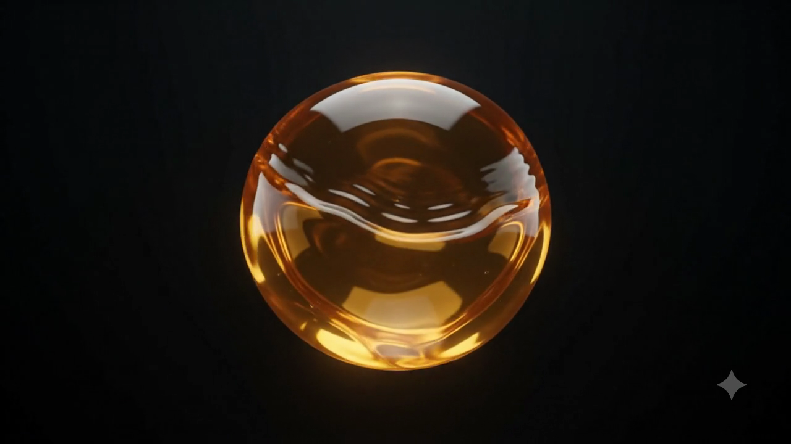

AI Pulse — Apple Watch 全屏铺满(真实液体)
球放大到
贴近屏幕边缘、微出血
,像手表自带表盘那样占满整块屏;环、液体、倒计时一起放大。
左 = 打开 App(真实液体在流);右 = 表盘小组件(静态一帧)。
9:41
91%
CLAUDE
4:09:18
WEEK 42%
55% left · 5h
▶ 打开 App · 全屏铺满
9:41

55%
CLAUDE
55% left · ↻4h09
⊙ 表盘 complication(静态)